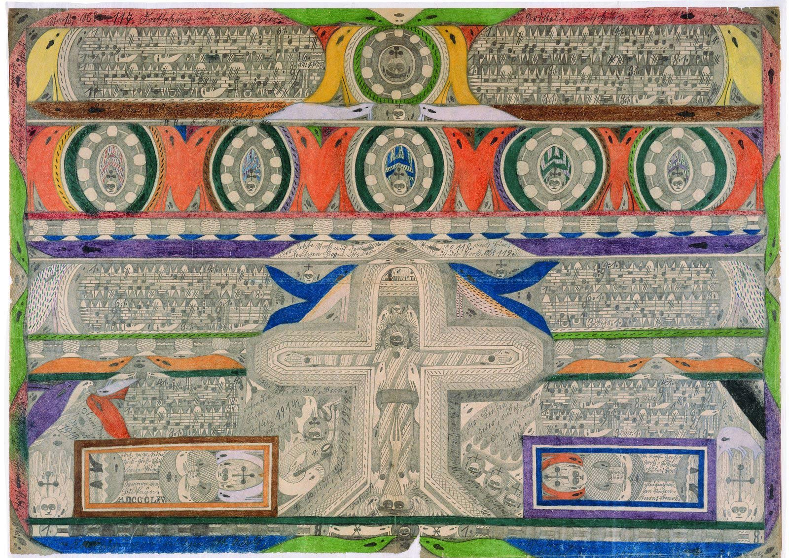
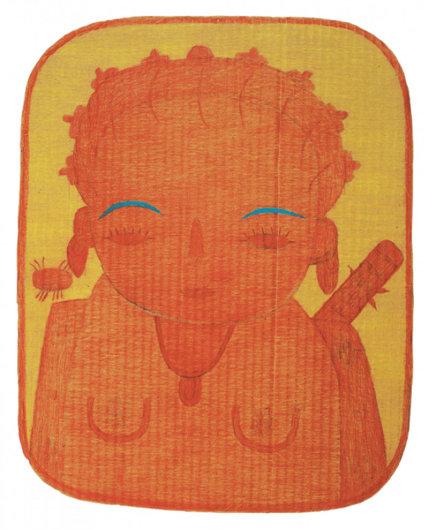

Спонтанное творчество — это вызов художественным институциям и их определению искусства. Хотя сегодня оно всё чаще становится предметом аукционных спекуляций. По словам куратора Терезии Земанковой, внучки одной из самых известных чешских художниц ар брюта Анны Земанковой, к этому направлению часто причисляются авторы, чьи работы всего лишь «не пахнут мейнстримом».
Терезия Земанкова (род. 1975) изучала теорию культуры на философском факультете Карлового университета в Праге, училась в парижской Сорбонне. Её диссертация была посвящена ар брюту в культурологической перспективе. Независимая публицистка и кураторка, представительница сообщества abcd с 2002 года.
Любительское искусство, которое неподконтрольно таким институциям, как художественные школы, музеи, галереи или специализированные журналы, можно называть по-разному. Есть ли на самом деле разница между понятиями ар брют, спонтанное искусство, любительское, непрофессиональное, аутентичное, автоматическоеПроцесс бессознательного письма, когда человек находится в состоянии транса или контролирует всё, кроме движений руки. Основной художественный прием сюрреализма. и искусство аутсайдеров?
Уже в самом количестве определений прекрасно видна путаница в терминологии этой темы. Ар брют как неприкосновенный, почти священный термин начинает меня немного раздражать, хотя я знаю, что таким образом пилю сук, на котором сижу. На мой взгляд, это искусственная категория. Для того, чтобы понять какой-либо феномен, необходимо для начала подвергнуть его классификации, установить его границы. Но то, что мы включаем в понятие ар брют, на самом деле неклассифицируемые единицы. Если просмотреть любую коллекцию ар брюта, заметно, что каждый автор уникален. В творчестве каждого из них прослеживаются конкретные принципы, связи, элементы, темы, методы, но набора знаков, характерного для этого направления в целом, не существует. Понятие довольно расплывчато и гибко, именно поэтому им зачастую определяют хорошо продуманный любительский полукич.
В 70-е гг. французский художник Жан Дюбюффе (1901-1985) — французский художник и скульптор. Ввёл в употребление термин «ар брют». в своей книге «Обычный человек за работой» назвал ар брютом творческие произведения всех видов, которые раскрывают спонтанность, являются непрофессиональными и как можно меньше следуют культурным шаблонам. Авторы ар брюта в основном далеки от среды профессиональных художников. Они черпают идеи и ритм из собственных источников, независимо организовывают процесс работы и выбор материалов... Те, кому не подходила эта дефиниция, изменили её и адаптировали к своим позициям и вкусу. Термин «ар брют» (art brut), введённый Дюбюффе, переводится как «сырое», «грубое» или «необработанное искусство». «Искусство аутсайдеров» — это термин Роджера КардиналаБританский историк искусства. Автор книги «Искусство аутсайдеров» — первой книги на английском языке про ар брют.. Это был англосаксонский синоним ар брюта, который позже стал использоваться шире. Сейчас он охватывает творчество психически больных, спиритистов, заключённых, провидцев, детей и частично народное и наивное искусство. Таким образом, искусство аутсайдеров состоит из достаточно аутентичных проявлений и творчества, которое находится в рамках установленной художественной культуры. Понятие «инситное искусство», введённое Штефаном ТкачемЧешский теоретик искусства., охватывало ар брют и наивное искусство, но часто под ним скрывалось и стремящееся к наивности творчество профессионалов.

Адольф Вёльфли
А как дифференцировать наивное искусство, народное, домашнее или, например, искусство медиумов?
Если мы хотим углубиться в теоретизирование, ар брют и наивное искусство — это два типа творческого выражения, которые, с одной стороны, имеют множество точек соприкосновения, но с другой — во многих аспектах значительно расходятся. Авторы наивного искусства стремятся уловить внешнюю идеализированную реальность, взаимодействуют с миром явлений. Ар брют художники выражают скорее фантазии, материализуют свою внутреннюю реальность, которая для них не менее истинна, чем псевдореальность внешнего мира. Они как бы работают с миром идей. Но и тем и другим для достижения совершенства не хватает соответствующего образования и знаний художественных канонов. Как заметил французский историк Мишель Рагон: «Наивное искусство нас успокаивает, а ар брют вызывает чувство страха». Домашнее искусство — это народная самодеятельность или даже DIY. Но и его определение можно расширить до невероятных размеров. Искусство медиумов относится к отдельной главе, даже если его иногда и относят к ар брюту. Речь здесь идёт о творческом выражении спиритистов или людей, которые творят бессознательно, являясь посредниками чужой воли, которая управляет их руками. Но это отдельный разговор.
Не доказывает ли ар брют то, что художественное творчество является универсальным человеческим выражением?
Стремление к творчеству — это, несомненно, одна из особенностей человека. Тем не менее с развитием западной цивилизации эта способность была каким-то образом смещена на второй план и стала относиться только к детям, сумасшедшим и художникам. Но ар брют — это творчество в подлинном виде. Когда кто-то начинает специально создавать ар брют — это значит, что он делает что-то другое. Единственное утверждение Дюбюффе, которое полностью соответствует сегодняшнему понятию ар брюта, что это искусство без имени. Дюбюффе определил ар брют как художественное направление, нетронутое культурой, вследствие чего отказался включать в него художественные выражения, возникшие за пределами европейской и американской цивилизаций. То есть культур, в которых то, что мы могли бы рассматривать как ар брют, могло бы оказаться, например, шаманским талисманом или локальным культурным явлением.
В последние годы, правда, ар брют вышел за рамки Европы и Америки. Коллекционеры отправились на поиски в Азию, Южную Америку и Африку. О том, что изначальное предположение Дюбюффе про акультурность было шатко, свидетельствует выставка японского ар брюта, которую мы с Иваной Брадковой подготовили для музея Монтанелли в 2013 году. На ней были представлены 8 авторов, большинство из которых страдали психическими расстройствами, тяжёлым аутизмом и очень редко выражались словесно. Но даже такие люди без обычного образования, живущие на краю общества, часто в специальных заведениях, впитывают влияния традиционной и современной культуры настолько, что это сразу видно в их творчестве. При первом же взгляде на выставку вы понимаете, что эти работы из Японии.

Масао Обата, без названия, между 1990 и 2007. Графитный карандаш, цветной карандаш, бумага.
Есть ли какие-либо культурные различия у коллекционеров со всего света? Их выбор произведений для коллекции зависит от культурного бэкграунда?
Мир ар брюта невелик. Все — от Америки до Японии — более-менее друг друга знают. Если бы мне нужно было описать коллекционера ар брюта, я бы сказала, что это человек страстный, одержимый идеей и неконвенциональный. Творчество, за которым он охотится, для него не только любопытная оригинальная декорация, но уникальное восприятие мира, которое открывает новые горизонты. Коллекционер ар брюта — авантюрист, а каждая коллекция — портрет владельца. Кто-то увлекается произведениями медиумов, а кто-то предпочитает более сырое выражение... Хотя в последнее время цена на ар брют повысилась, из-за чего неизбежно появилось больше спекулянтов.
Со временем выкристализовалось всеми принятое ядро «классиков ар брюта»: Алоиза Корбаз, Адольф Вёльфли, Карло Цинелли, Огюстен Лесаж. Они как правило составляют основу государственных и частных коллекций, пока те не ограничат свою тему географически либо не начнут интересоваться только фигуративным«Предметное искусство». Искусство, которое максимально точно сохраняет сходство с реальными объектами. В основном относится к живописи и скульптуре. искусством или произведениями медиумов.